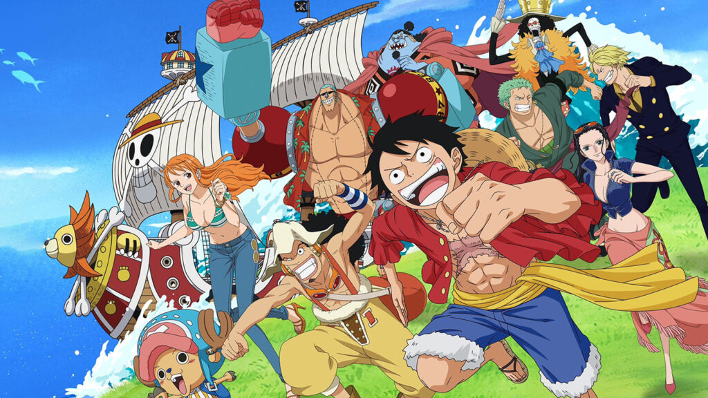

About Luffy
Monkey D Luffy is a guy who ate the Gomu Gomu no Mi - The Gum-Gum Fruit and gained super powers. He travels the Seas with his crew of friends to try to find the One Piece and become the next Pirate King.
Luffy and his Crew
Luffy's Characteristics
- Always looks out for his Crew
- Never gives up
- Never leaves anyone behind
Luffy's Crew
Luffy's hand-picked crew is a well-rounded ragtag group of misfits who compliment eachother perfectly.
Click the links below to read more about them:
- "Pirate Hunter" Roronoa Zoro, the Swordsman
- "Cat Burglar" Nami, the Navigator
- "King of Snipers" Usopp, the Sniper
- "Black Leg" Sanji, the cook
- "Cotton Candy Lover" Tony Tony Chopper, the Doctor
- "Devil Child" Nico Robin, the Archeologist
- "Cyborg" Franky, the Shipwright
- "Soul King" Brook, the Musician
- "Knight of the Sea" Jinbe, the Helmsman